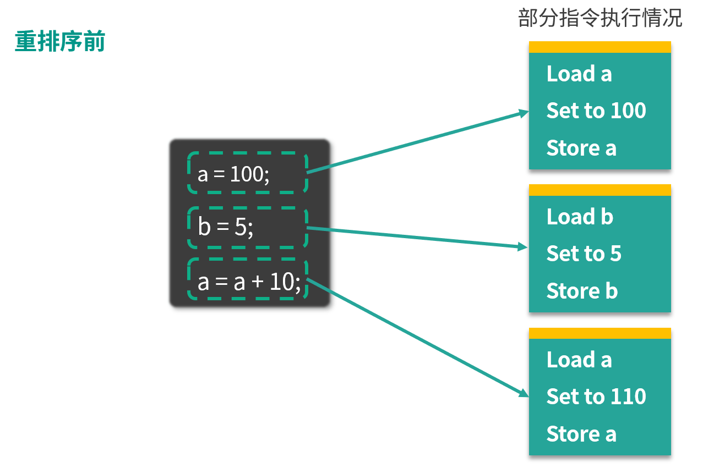
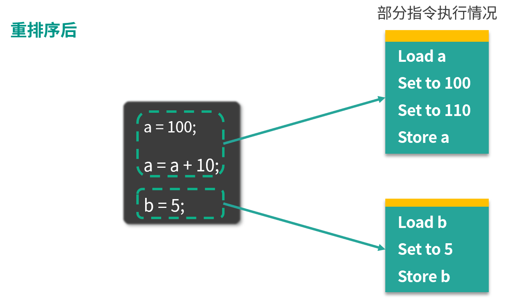

- 00 由点及面，搭建你的 Java 并发知识网.md
- 01 为何说只有 1 种实现线程的方法？.md
- 02 如何正确停止线程？为什么 volatile 标记位的停止方法是错误的？.md
- 03 线程是如何在 6 种状态之间转换的？.md
- 04 waitnotifynotifyAll 方法的使用注意事项？.md
- 05 有哪几种实现生产者消费者模式的方法？.md
- 06 一共有哪 3 类线程安全问题？.md
- 07 哪些场景需要额外注意线程安全问题？.md
- 08 为什么多线程会带来性能问题？.md
- 09 使用线程池比手动创建线程好在哪里？.md
- 10 线程池的各个参数的含义？.md
- 11 线程池有哪 4 种拒绝策略？.md
- 12 有哪 6 种常见的线程池？什么是 Java8 的 ForkJoinPool？.md
- 13 线程池常用的阻塞队列有哪些？.md
- 14 为什么不应该自动创建线程池？.md
- 15 合适的线程数量是多少？CPU 核心数和线程数的关系？.md
- 16 如何根据实际需要，定制自己的线程池？.md
- 17 如何正确关闭线程池？shutdown 和 shutdownNow 的区别？.md
- 18 线程池实现“线程复用”的原理？.md
- 19 你知道哪几种锁？分别有什么特点？.md
- 20 悲观锁和乐观锁的本质是什么？.md
- 21 如何看到 synchronized 背后的“monitor 锁”？.md
- 22 synchronized 和 Lock 孰优孰劣，如何选择？.md
- 23 Lock 有哪几个常用方法？分别有什么用？.md
- 24 讲一讲公平锁和非公平锁，为什么要“非公平”？.md
- 25 读写锁 ReadWriteLock 获取锁有哪些规则？.md
- 26 读锁应该插队吗？什么是读写锁的升降级？.md
- 27 什么是自旋锁？自旋的好处和后果是什么呢？.md
- 28 JVM 对锁进行了哪些优化？.md
- 29 HashMap 为什么是线程不安全的？.md
- 30 ConcurrentHashMap 在 Java7 和 8 有何不同？.md
- 31 为什么 Map 桶中超过 8 个才转为红黑树？.md
- 32 同样是线程安全，ConcurrentHashMap 和 Hashtable 的区别.md
- 33 CopyOnWriteArrayList 有什么特点？.md
- 34 什么是阻塞队列？.md
- 35 阻塞队列包含哪些常用的方法？add、offer、put 等方法的区别？.md
- 36 有哪几种常见的阻塞队列？.md
- 37 阻塞和非阻塞队列的并发安全原理是什么？.md
- 38 如何选择适合自己的阻塞队列？.md
- 39 原子类是如何利用 CAS 保证线程安全的？.md
- 40 AtomicInteger 在高并发下性能不好，如何解决？为什么？.md
- 41 原子类和 volatile 有什么异同？.md
- 42 AtomicInteger 和 synchronized 的异同点？.md
- 43 Java 8 中 Adder 和 Accumulator 有什么区别？.md
- 44 ThreadLocal 适合用在哪些实际生产的场景中？.md
- 45 ThreadLocal 是用来解决共享资源的多线程访问的问题吗？.md
- 46 多个 ThreadLocal 在 Thread 中的 threadlocals 里是怎么存储的？.md
- 47 内存泄漏——为何每次用完 ThreadLocal 都要调用 remove()？.md
- 48 Callable 和 Runnable 的不同？.md
- 49 Future 的主要功能是什么？.md
- 50 使用 Future 有哪些注意点？Future 产生新的线程了吗？.md
- 51 如何利用 CompletableFuture 实现“旅游平台”问题？.md
- 52 信号量能被 FixedThreadPool 替代吗？.md
- 53 CountDownLatch 是如何安排线程执行顺序的？.md
- 54 CyclicBarrier 和 CountdownLatch 有什么异同？.md
- 55 Condition、object.wait() 和 notify() 的关系？.md
- 56 讲一讲什么是 Java 内存模型？.md
- 57 什么是指令重排序？为什么要重排序？.md
- 58 Java 中的原子操作有哪些注意事项？.md
- 59 什么是“内存可见性”问题？.md
- 60 主内存和工作内存的关系？.md
- 61 什么是 happens-before 规则？.md
- 62 volatile 的作用是什么？与 synchronized 有什么异同？.md
- 63 单例模式的双重检查锁模式为什么必须加 volatile？.md
- 64 你知道什么是 CAS 吗？.md
- 65 CAS 和乐观锁的关系，什么时候会用到 CAS？.md
- 66 CAS 有什么缺点？.md
- 67 如何写一个必然死锁的例子？.md
- 68 发生死锁必须满足哪 4 个条件？.md
- 69 如何用命令行和代码定位死锁？.md
- 70 有哪些解决死锁问题的策略？.md
- 71 讲一讲经典的哲学家就餐问题.md
- 72 final 的三种用法是什么？.md
- 73 为什么加了 final 却依然无法拥有“不变性”？.md
- 74 为什么 String 被设计为是不可变的？.md
- 75 为什么需要 AQS？AQS 的作用和重要性是什么？.md
- 76 AQS 的内部原理是什么样的？.md
- 77 AQS 在 CountDownLatch 等类中的应用原理是什么？.md
- 78 一份独家的 Java 并发工具图谱.md
57 什么是指令重排序？为什么要重排序？
本课时我们主要介绍什么是重排序？为什么要重排序？
什么是重排序
假设我们写了一个 Java 程序，包含一系列的语句，我们会默认期望这些语句的实际运行顺序和写的代码顺序一致。但实际上，编译器、JVM 或者 CPU 都有可能出于优化等目的，对于实际指令执行的顺序进行调整，这就是重排序。
重排序的好处：提高处理速度
你可能感到很困惑，为什么要重排序？这样做有什么好处呢？
我们来举一个具体的例子。

图中左侧是 3 行 Java 代码，右侧是这 3 行代码可能被转化成的指令。可以看出 a = 100 对应的是 Load a、Set to 100、Store a，意味着从主存中读取 a 的值，然后把值设置为 100，并存储回去，同理， b = 5 对应的是下面三行 Load b、Set to 5、Store b，最后的 a = a + 10，对应的是 Load a、Set to 110、Store a。如果你仔细观察，会发现这里有两次“Load a”和两次“Store a”，说明存在一定的重排序的优化空间。
经过重排序之后，情况如下图所示：

重排序后， a 的两次操作被放到一起，指令执行情况变为 Load a、Set to 100、Set to 110、 Store a。下面和 b 相关的指令不变，仍对应 Load b、 Set to 5、Store b。
可以看出，重排序后 a 的相关指令发生了变化，节省了一次 Load a 和一次 Store a。重排序通过减少执行指令，从而提高整体的运行速度，这就是重排序带来的优化和好处。
重排序的 3 种情况
下面我们来看一下重排序的 3 种情况。
（1）编译器优化
编译器（包括 JVM、JIT 编译器等）出于优化的目的，例如当前有了数据 a，把对 a 的操作放到一起效率会更高，避免读取 b 后又返回来重新读取 a 的时间开销，此时在编译的过程中会进行一定程度的重排。不过重排序并不意味着可以任意排序，它需要需要保证重排序后，不改变单线程内的语义，否则如果能任意排序的话，程序早就逻辑混乱了。
（2）CPU 重排序
CPU 同样会有优化行为，这里的优化和编译器优化类似，都是通过乱序执行的技术来提高整体的执行效率。所以即使之前编译器不发生重排，CPU 也可能进行重排，我们在开发中，一定要考虑到重排序带来的后果。
（3） 内存的“重排序”
内存系统内不存在真正的重排序，但是内存会带来看上去和重排序一样的效果，所以这里的“重排序”打了双引号。由于内存有缓存的存在，在 JMM 里表现为主存和本地内存，而主存和本地内存的内容可能不一致，所以这也会导致程序表现出乱序的行为。
举个例子，线程 1 修改了 a 的值，但是修改后没有来得及把新结果写回主存或者线程 2 没来得及读到最新的值，所以线程 2 看不到刚才线程 1 对 a 的修改，此时线程 2 看到的 a 还是等于初始值。但是线程 2 却可能看到线程 1 修改 a 之后的代码执行效果，表面上看起来像是发生了重顺序。
总结
以上就是本课时的内容。本课时我们首先用一个例子介绍了什么是重排序，然后分析了重排序所能带来的好处，并介绍了可能发生重排序的 3 种情况
© 2019 - 2023 Liangliang Lee. Powered by gin and hexo-theme-book.